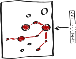
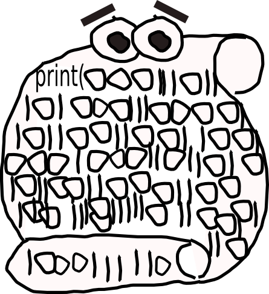

Slides
Some work on event relevance
 May 11th, 2010, Pdf slides
Understanding Narrative Interest: Some Evidence on the Role of Unexpectedness
july 2009, Pdf slides, poster presented at the Cognitive Science conference in Amsterdam
Quelques techniques d'extraction sémantique
 spring 2009, Pdf slides
Rapport mi-parcours